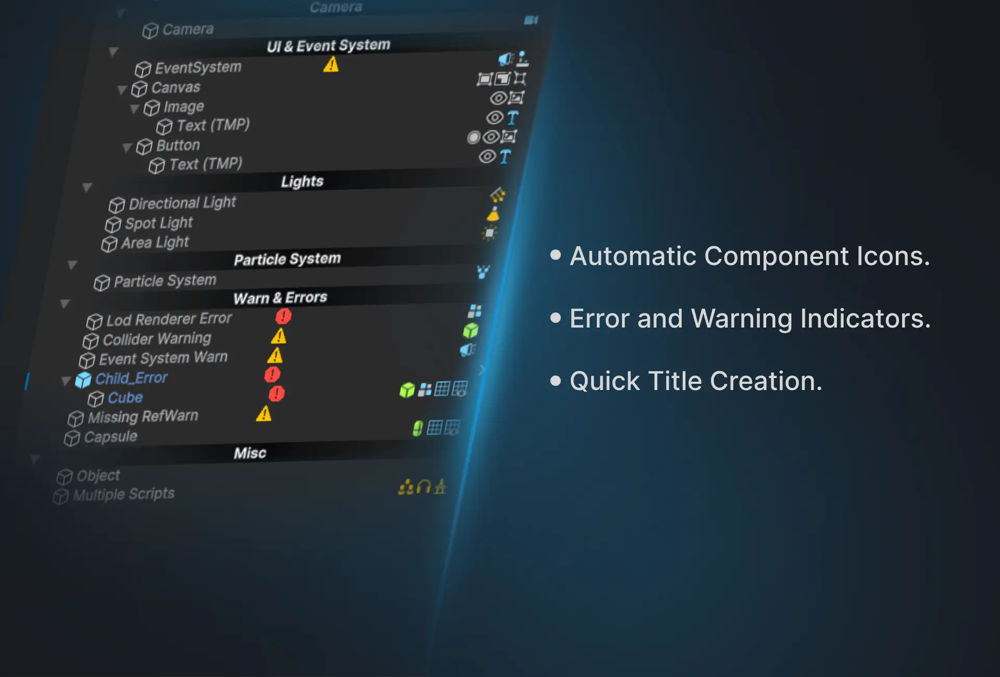
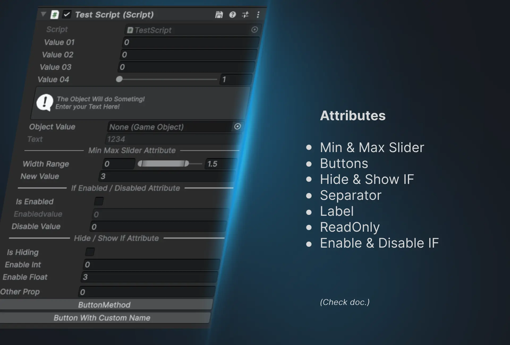
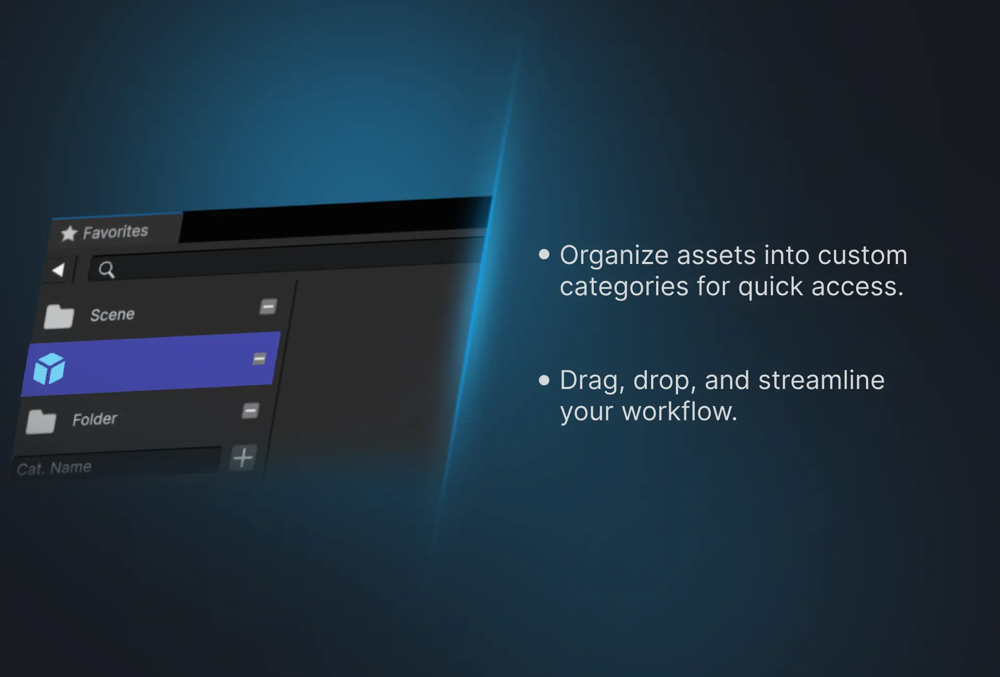

Simple Hierarchy e sFavorite otimizam o desenvolvimento do Unity com ícones automáticos dos componentes, um Quick Inspector, rastreio de erros e gestão organizada de ativos para maior produtividade e organização.







Simple Hierarchy e sFavorite são ferramentas essenciais concebidas para melhorar significativamente o seu processo de desenvolvimento Unity, melhorando a gestão de cenas e o manuseamento de ativos. Simple Hierarchy transforma a janela Unity Hierarchy num espaço de trabalho mais poderoso e intuitivo:
Componente de guardar em tempo de execução: guarde os valores dos componentes durante o tempo de execução para preservar as alterações efetuadas durante o modo de reprodução. Isto é útil para depurar e testar ajustes sem perder as modificações ao parar o jogo. Pin & Pin Tracker: Acompanhe os objetos importantes na sua cena com o sistema Pin. Fixe qualquer objeto para facilitar o acesso e utilize a janela Pin Tracker para visualizar todos os objetos fixados. Isto simplifica a navegação e acelera os testes e a depuração.
Rastreador de erros e avisos: o SHierarchy inclui um sistema robusto de rastreio de erros e avisos que destaca problemas comuns na sua cena. Isto inclui:
O ativo disponibiliza vários atributos, como Label, ReadOnly, MinMaxSlider, Hide/Show If, Disable/Enable If, Button, Separator.
sFavorite complementa SHierarchy simplificando a gestão de ativos:
Juntos, SHierarchy e sFavorite fornecem um kit de ferramentas abrangente para programadores Unity, melhorando a gestão de cenas, simplificando a resolução de erros e otimizando o manuseamento de ativos. Estas ferramentas foram concebidas para tornar o seu processo de desenvolvimento mais eficiente e organizado, garantindo um fluxo de trabalho mais tranquilo e produtivo.
Entre
Correção de Bugs
Guardar componentes em tempo de execução, sistema de pinos, atributos (botão, ReadOnly, MinMaxSlider, Seprator, ocultar/mostrar se, desativar/ativar se)
Atributo Label

Este website utiliza cookies e tecnologias relacionadas para funcionalidades do site, análise, melhoria da experiência do utilizador e publicidade. Pode consentir na utilização destas tecnologias ou gerir as suas próprias preferências.